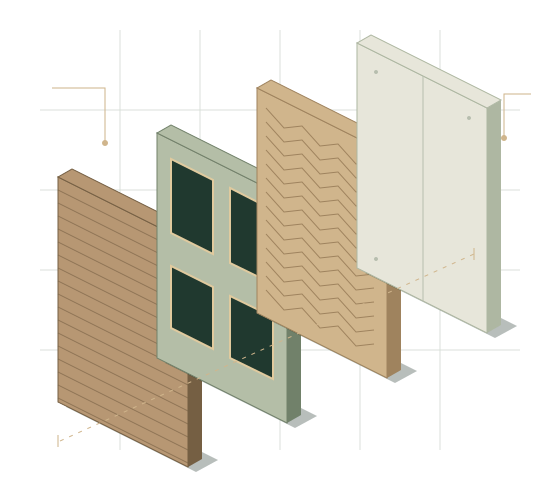

01 /
Ombygging og rombruk
Vi ser på mulighetene for en mer praktisk planløsning og avklarer behov for tegninger, søknad og andre fag.
Rehabilitering
En bedre planløsning eller bygningsdeler som trenger omtanke. Vi hjelper deg med å forstå det eksisterende før du bestemmer det nye.
Bergen & Bjørnafjorden · Bygg og ingeniørtjenester
SKISSE & HÅNDVERK / Rehabilitering

Et gjennomtenkt utgangspunkt
Et eksisterende hus har både kvaliteter og forhold som må undersøkes. Vi bistår med planlegging, tegninger og tømrerarbeid ved rehabilitering og ombygging. Før tiltakene velges, avklarer vi hva som er kjent, hva som bør undersøkes og hvilke fag som trengs.
Konstruksjoner, fuktforhold og tidligere løsninger kan påvirke omfanget. Behov for undersøkelser og spesialister vurderes i hvert prosjekt.
Dette er nyttig å ha klart
Bilder, tegninger, informasjon om byggeår og tidligere endringer. Beskriv hva du vil forbedre og hvilke problemer du kjenner til.
Avtalte leveranser
01 /
Vi ser på mulighetene for en mer praktisk planløsning og avklarer behov for tegninger, søknad og andre fag.
02 /
Tømrerarbeid, utskifting og oppgradering etter avtale. Eksisterende oppbygging og tilstand gir føringer for løsningene.
03 /
Vi kan hjelpe med å prioritere og samordne arbeidene. Tekniske avklaringer og uavklarte forhold gjøres tydelige.
Slik arbeider vi
Vi tar utgangspunkt i huset slik det er. Tiltak og leveranse avtales på grunnlag av tilgjengelig kunnskap og nødvendige undersøkelser.
01 /
Vi går gjennom ønskene dine, boligen og underlaget. Befaring og undersøkelser avklares.
02 /
Muligheter, prioriteringer og behov for prosjektering eller søknad vurderes.
03 /
Avtalt tømrerarbeid utføres. Nye funn avklares med deg før de påvirker leveransen.
Før vi setter i gang
Vi kan bistå med planlegging og tegninger for ombygging. Konstruksjoner, tekniske installasjoner og eventuell søknadsplikt må avklares.
Forhold som ikke var kjent, må vurderes før arbeidet fortsetter i det berørte området. Tiltak, eventuelle spesialister og konsekvenser for avtalen avklares med deg.
Det avhenger av hva som skal gjøres. Blant annet bruksendring, fasadeendring og inngrep i konstruksjoner kan kreve avklaringer. Vi vurderer søknadsbehovet for det konkrete tiltaket.
Det avhenger av omfang, sikkerhet og hvilke rom og installasjoner som berøres. Dette bør avklares når arbeidene planlegges.
La oss snakke om prosjektet ditt
Fortell om boligen og endringene du ønsker. Bilder og eksisterende tegninger gir oss et godt sted å starte.